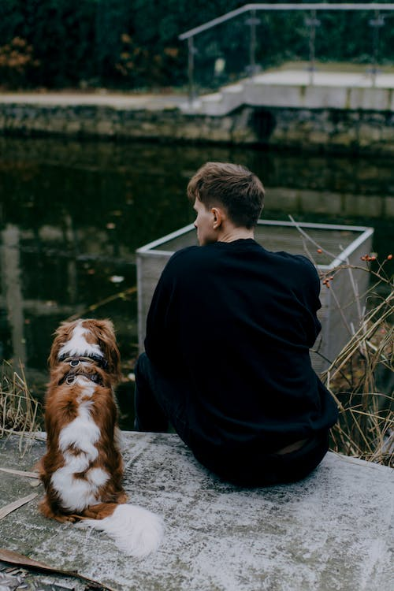
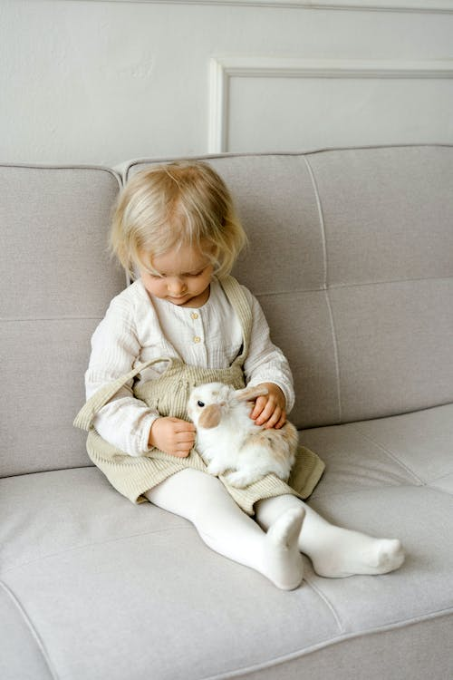
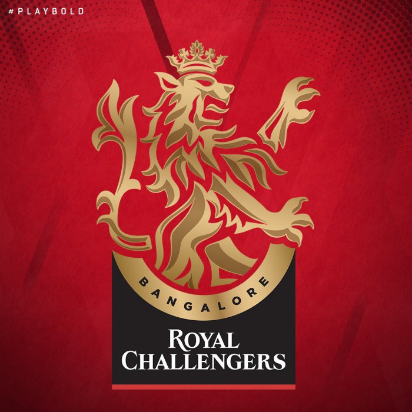

Opacity and Filters
Opacity
0.1 to 1



Filters
The filter Property
filter: blur(4px)
filter: brightness(0.30)
0% will make the image completely black.
100% (1) is default and represents the original image.
Values over 100% will provide brighter results.
filter: contrast(180%)
0% will make the image completely black.
100% (1) is default, and represents the original image.
Values over 100% will provide results with more contrast.
filter: grayscale(100%)
0% (0) is default and represents the original image.
100% will make the image completely gray (used for black and white images).
Note: Negative values are not allowed.
filter: hue-rotate(180deg)
Applies a hue rotation on the image.
The value defines the number of degrees around the color circle
the image samples will be adjusted.
0deg is default, and represents the original image.
Note: Maximum value is 360deg.
filter: invert(100%)
Inverts the samples in the image.
0% (0) is default and represents the original image.
100% will make the image completely inverted.
Note: Negative values are not allowed.
filter: opacity(50%)
Sets the opacity level for the image. The opacity-level
describes the transparency-level, where:
0% is completely transparent.
100% (1) is default and represents the original image (no transparency).
filter: saturate(7)
0% (0) will make the image completely un-saturated.
100% is default and represents the original image.
Values over 100% provides super-saturated results.
Note: Negative values are not allowed.
filter: sepia(100%)
0% (0) is default and represents the original image.
100% will make the image completely sepia.
Note: Negative values are not allowed.
filter: drop-shadow(8px 8px 10px green)
h-offset v-offset blur spread color
negative values left the images